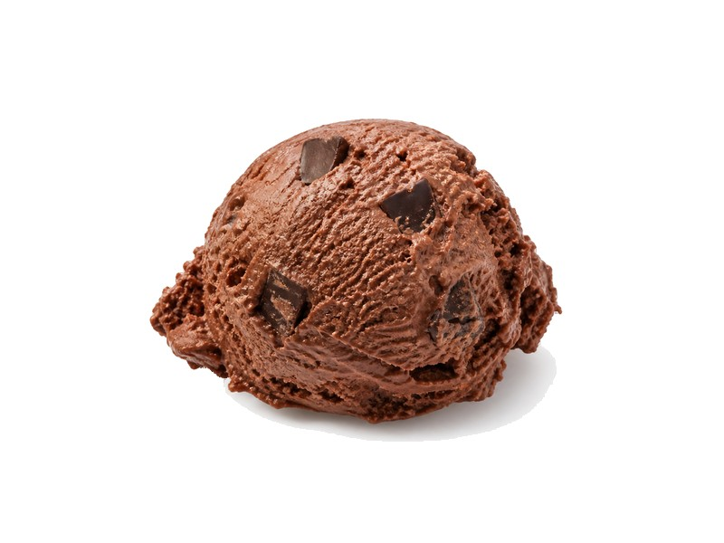

Słodycze i przekąski
Lody Magnum Classic
Lody Magnum Classic: 4 g białka, 310 kcal, 28 g węglowodanów i 20 g tłuszczu na 100 g. Kategoria: Słodycze i przekąski.
Kalorie310 kcalna 100 g
Białko / proteiny4 g
Węglowodany28 g
Tłuszcz20 g
Cena (szac.)~4,06 złza 100 g
Ceny zaktualizowano: maj 2026 (szacunek — ceny w popularnych supermarketach)
Porcja: sztuka (86g)
| Kalorie | 267 kcal |
|---|---|
| Białko | 3.4 g |
| Węglowodany | 24.1 g |
| Tłuszcz | 17.2 g |
| Cena (szac.) | ~3,49 zł |
Szczegółowe składniki odżywcze na 100 g
| Wartość energetyczna (kalorie) | 310 kcal |
|---|---|
| Białko (proteiny) | 4 g |
| Węglowodany | 28 g |
| Tłuszcz | 20 g |
| Tłuszcze nasycone | 14 g |
| Tłuszcze nienasycone | 6 g |
| Witaminy i minerały | Wapń, Magnez, Żelazo |
| Współczynnik kcal / 1 g białka | 77.5 |
| Cena produktu (szac. za 100 g) | ~4,06 zł |
| Cena za 100 g białka (szac.) | ~101,45 zł |